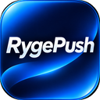

Sunucu adresini ve erişim anahtarını gir. İkisi de iPhone'da girdiklerinle aynı.
Alt+Shift+R RygePush'u açar, Alt+Shift+P açık sayfayı tüm cihazlarına gönderir. Sayfada, linkte, seçili metinde ya da resimde sağ tıklayınca RygePush'a gönder menüsü çıkar.